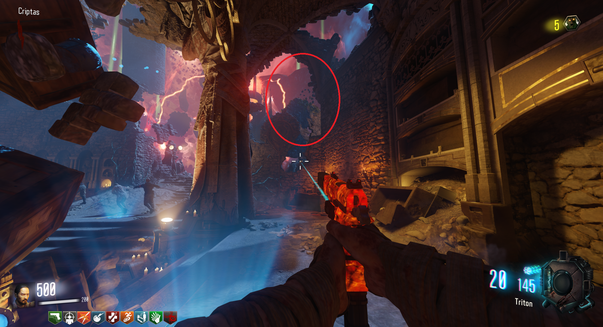

Perk gratis (Revelations)
Podremos conseguir un perk gratis por cada jugador que se encuentre en la partida.
No tendrán en cuenta los huecos de perk disponible pudiendo obtener un total de 8 perks sin necesidad de ningún chicle siendo 4 jugadores.
Para lograr esto, primero compraremos 4 perks en las máquinas llegando al máximo disponible y después haremos lo siguiente:
Iremos a Der Eisendrachen y activaremos la gravedad situándonos encima de las cuatro baldosas alrededor de la pirámide.
Cuando la gravedad este activa, entraremos al parkour por este agujero de la imagen.

Al completar el parkour, llegaremos al perk del final. Cada jugador deberá de completarlo para sumar los cuatro perks adicionales.